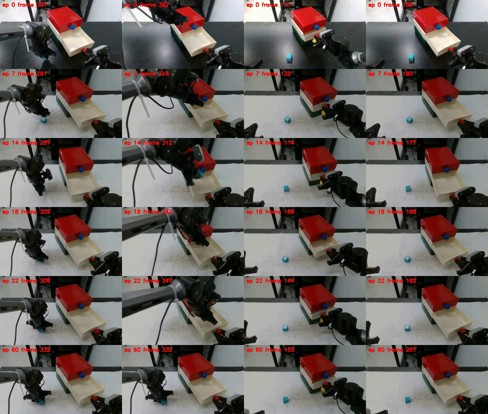
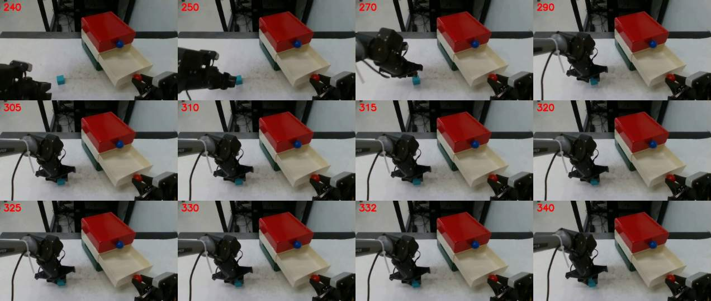

这是原始视频诊断预览，不是已生成或验收的 retime 数据集。新增合格输出：0。原有 main 与8条回归输出未修改。实验分支 shuyuan/drawer-58-recovery。
45源涉及二维遮挡，12源被未实测的抽屉几何代理拒绝，1源抓取边界截晚。源60人工校正边界后仍未通过最高点候选检查，使用人工额度1/5。新增遮挡合成范围待用户确认。
每行依次为拾取、持物峰值、开始开屉、开屉完成；并非 retime 后的时间顺序。

240–290可见接近，315–320夹爪闭合。旧 approach_start=323 截掉了这段；遥测的持续左臂运动从边196开始。保留视觉 pickup=332 与 release=462。

| 源 | 分类 | 峰值帧 | TCP Z (m) | 当前状态 |
|---|---|---|---|---|
| 7 | 最高点二维遮挡 | 318 | 0.2176 | 未通过 |
| 8 | 刹停期间抽屉代理 | 331 | 0.1941 | 未通过 |
| 9 | 最高点二维遮挡 | 329 | 0.2083 | 未通过 |
| 11 | 最高点二维遮挡 | 365 | 0.1664 | 未通过 |
| 12 | 最高点二维遮挡 | 317 | 0.1803 | 未通过 |
| 14 | 最高点二维遮挡 | 312 | 0.2007 | 未通过 |
| 15 | 最高点二维遮挡 | 292 | 0.1829 | 未通过 |
| 16 | 最高点二维遮挡 | 330 | 0.1995 | 未通过 |
| 17 | 最高点二维遮挡 | 312 | 0.1938 | 未通过 |
| 18 | 最高点扫掠体积 | 342 | 0.1692 | 未通过 |
| 19 | 最高点二维遮挡 | 274 | 0.2317 | 未通过 |
| 22 | 最高点二维遮挡 | 347 | 0.1680 | 未通过 |
| 23 | 最高点二维遮挡 | 332 | 0.2306 | 未通过 |
| 24 | 最高点二维遮挡 | 377 | 0.2250 | 未通过 |
| 25 | 最高点二维遮挡 | 337 | 0.1916 | 未通过 |
| 26 | 最高点二维遮挡 | 351 | 0.2335 | 未通过 |
| 27 | 最高点二维遮挡 | 305 | 0.2156 | 未通过 |
| 28 | 最高点二维遮挡 | 322 | 0.1918 | 未通过 |
| 29 | 最高点二维遮挡 | 307 | 0.2030 | 未通过 |
| 30 | 最高点二维遮挡 | 339 | 0.1826 | 未通过 |
| 31 | 最高点二维遮挡 | 320 | 0.2154 | 未通过 |
| 32 | 最高点扫掠体积 | 309 | 0.1915 | 未通过 |
| 33 | 最高点二维遮挡 | 297 | 0.1943 | 未通过 |
| 34 | 最高点二维遮挡 | 351 | 0.2009 | 未通过 |
| 35 | 最高点二维遮挡 | 299 | 0.2314 | 未通过 |
| 36 | 最高点二维遮挡 | 384 | 0.2102 | 未通过 |
| 37 | 最高点二维遮挡 | 297 | 0.2497 | 未通过 |
| 38 | 最高点二维遮挡 | 322 | 0.2167 | 未通过 |
| 39 | 最高点二维遮挡 | 304 | 0.1893 | 未通过 |
| 40 | 最高点二维遮挡 | 310 | 0.1708 | 未通过 |
| 41 | 最高点二维遮挡 | 279 | 0.2046 | 未通过 |
| 42 | 最高点二维遮挡 | 300 | 0.1917 | 未通过 |
| 43 | 最高点二维遮挡 | 304 | 0.2152 | 未通过 |
| 44 | 最高点扫掠体积 | 337 | 0.1488 | 未通过 |
| 45 | 最高点二维遮挡 | 327 | 0.2403 | 未通过 |
| 47 | 最高点二维遮挡 | 436 | 0.1926 | 未通过 |
| 48 | 刹停期间抽屉代理 | 370 | 0.1638 | 未通过 |
| 50 | 刹停期间抽屉代理 | 386 | 0.1710 | 未通过 |
| 51 | 刹停期间抽屉代理 | 375 | 0.1810 | 未通过 |
| 55 | 最高点扫掠体积 | 393 | 0.1596 | 未通过 |
| 60 | 抓取边界 | None | — | 未通过 |
| 61 | 最高点扫掠体积 | 378 | 0.1626 | 未通过 |
| 62 | 最高点扫掠体积 | 363 | 0.1677 | 未通过 |
| 63 | 刹停期间抽屉代理 | 357 | 0.1731 | 未通过 |
| 64 | 最高点二维遮挡 | 354 | 0.1738 | 未通过 |
| 65 | 最高点二维遮挡 | 439 | 0.1647 | 未通过 |
| 67 | 最高点二维遮挡 | 306 | 0.1775 | 未通过 |
| 68 | 最高点扫掠体积 | 292 | 0.1588 | 未通过 |
| 69 | 最高点二维遮挡 | 291 | 0.2434 | 未通过 |
| 71 | 最高点二维遮挡 | 284 | 0.1908 | 未通过 |
| 72 | 举高途中二维遮挡 | 309 | 0.1971 | 未通过 |
| 73 | 最高点二维遮挡 | 317 | 0.1873 | 未通过 |
| 74 | 举高途中二维遮挡 | 300 | 0.1975 | 未通过 |
| 75 | 最高点二维遮挡 | 291 | 0.2048 | 未通过 |
| 76 | 最高点二维遮挡 | 276 | 0.2259 | 未通过 |
| 77 | 举高途中二维遮挡 | 280 | 0.2198 | 未通过 |
| 78 | 举高途中二维遮挡 | 307 | 0.1722 | 未通过 |
| 80 | 举高途中二维遮挡 | 365 | 0.1859 | 未通过 |